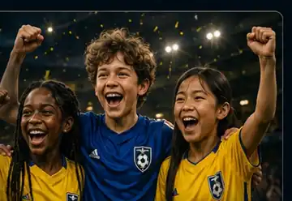

Stadion & Spieltag
Ein Spieltag, an den Kinder sich erinnern.
Mehr junge Fans sind der Anfang. Entscheidend ist, dass sie wiederkommen wollen.

Mehr Fußballenergie
Einfach. Nahbar. Erinnerungswürdig.
Halbzeit-Verlosung
Kleine lokale Preise. Kostenloser Zugang. Große Aufmerksamkeit.

Fußball-Challenge
Torschuss, Zielschuss oder optional gegen einen geeigneten Reservekeeper.

Meet & Greet
Spieler treffen, Fotos machen, Nähe zum Verein erleben.
Freiwillige aktivieren
Gute Ideen brauchen Helfer — nicht mehr Bürokratie.
Deshalb bleibt Volunteer-Recruiting ein eigener Baustein über RunYourEvent.com.
- Klare, einzelne Einsätze statt Dauerverpflichtung
- Einfache Aufgaben- und Helferplanung
- Optionales Sicherheits-/Versicherungsmodul später ergänzbar
RYE
RunYourEvent.comEventplanung & Volunteers